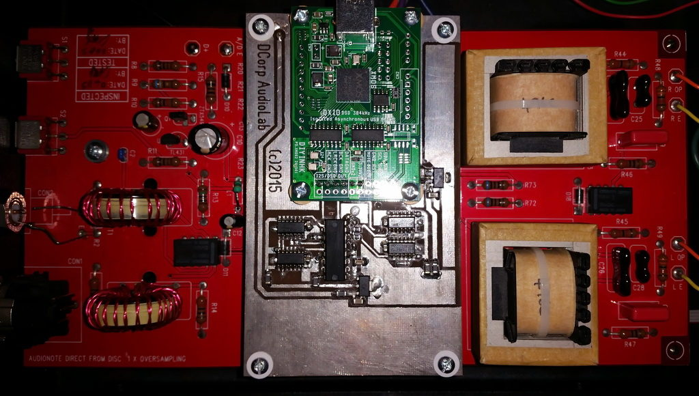
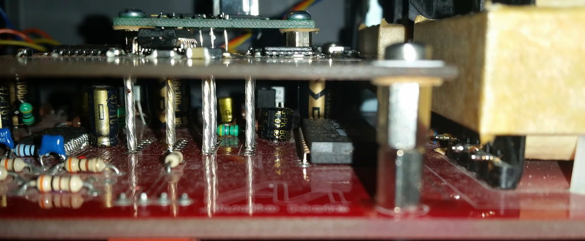

Audio Note DAC3.1X upgrade
In scope of this progect three things were covered. First of all XMOS transport was used as input stage. Second – proper shift register was added. So both left and right chanel samples would reach DAC chip simultaneously. And last but not least option – the PCB was designed to minimize traces length and spread spectrum.
Additional board is placed directly above DAC original board to minimize length of connection wires too.